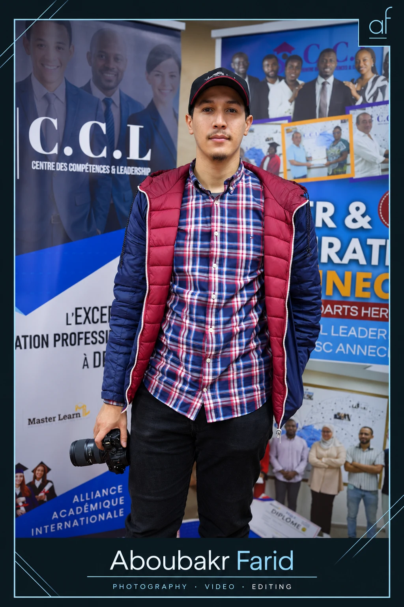

Mon rôle : conception des visuels et direction des consignes de génération avec ChatGPT.
SUPPORTS & MONTAGE
Présentations et cours vidéo.
Je prépare les présentations pédagogiques et je réalise le montage des cours vidéo. Ces captures montrent les supports et la ligne de temps du montage.
Du reportage à la communication de marque, je réunis la photographie, la vidéo et le montage autour de votre projet.
01
Photographie & photojournalisme
Reportages, événements, portraits et sport. Un regard attentif aux personnes et aux lieux.
02
Tournage & production vidéo
Cours filmés, vidéos institutionnelles et contenus publicitaires. Des images au service d’une histoire claire.
03
Montage & contenus sociaux
Montage, postproduction et formats courts pour les réseaux sociaux, avec Premiere Pro, Media Encoder et CapCut.
04
Photographie commerciale
Photographies pour les entreprises, les restaurants et l’immobilier, adaptées à leurs besoins de communication.
TRAVAIL ASSOCIATIF & BÉNÉVOLAT
L’humain, au cœur de l’image.
Documenter les personnes et les initiatives qui font la différence, à travers le travail associatif et le bénévolat.
Fondation Mohammed V pour la Solidarité
Association Baraka Idman
Pompiers Humanitaires Français
Association Ana M3ak
01 /
Association Baraka Idman
Média & communication · Emploi et bénévolat
2023–202502 /
Association Ana M3ak pour le Développement Durable
Documentation des activités · Bénévolat
2017–2020

Aboubakr FaridBasé au Maroc
03 / DERRIÈRE L’OBJECTIF
Observer de près. Raconter avec sincérité.
Je suis Aboubakr Farid, photographe, vidéaste et monteur vidéo basé au Maroc, avec plus de cinq ans d’expérience sur le terrain.
Mes images explorent les réalités humaines, sociales et éducatives. Du travail associatif à la production de cours filmés, je recherche l’authenticité, l’émotion et le sens.
Mon expérience réunit associations, médias et plateformes éducatives. J’utilise aussi les outils d’IA pour créer des visuels et accompagner la production de contenus.
PARCOURS
Mon expérience.
09/2025 — aujourd’hui
Vidéaste & monteur vidéo
CCL — Centre des Compétences et Leadership · Temps plein
Marrakech, Maroc · Sur site
11/2024 — 09/2025
Photojournaliste freelance
flach24.com · Freelance
Marrakech, Maroc · À distance
12/2024 — 08/2025
Photographe freelance
Nuxera Group · Freelance
Marrakech, Maroc · Sur site
02/2023 — 05/2024
Média & communication
Association Baraka Idman — Centres d’addictologie Marrakech · Temps plein
Marrakech, Maroc · Sur site
02/2022 — 04/2023
Photojournaliste
Expresstv.ma · Temps plein
Marrakech, Maroc · À distance
11/2021 — 03/2022
Photojournaliste freelance
3LACH TV · Freelance
Marrakech, Maroc · À distance
OUTILS
Mes outils au quotidien.
Les logiciels et outils d’IA que j’utilise pour préparer, créer et finaliser mes contenus.
Création visuelle & vidéo
Canva
Présentations et contenus sociaux
Adobe Photoshop
Retouche et création visuelle
Adobe Premiere Pro
Montage vidéo
Adobe Media Encoder
Encodage et exports
CapCut
Montage et formats courts
Intelligence artificielle
ChatGPT
Idées, consignes et création de visuels
ElevenLabs
Voix off
Gemini
Recherche et préparation des contenus
Suno
Création musicale avec l’IA
Magnific
Amélioration des images
Google Flow
Création vidéo avec l’IA
UNE HISTOIRE OU UNE IDÉE ?
Donnons-lui de la visibilité.
Parlez-moi de votre idée, de votre public et de l’histoire que vous souhaitez partager. La discussion commence sur LinkedIn.